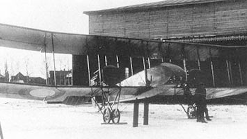

C - 18

- Разработчик: Сикорский
- Страна: Россия
- Первый полет: 1916
- Тип: Тяжелый истребитель
Сикорский С-18 — это самолёт, разработанный в 1915 году. Он предназначался для сопровождения дальних бомбардировщиков и мог нести бомбовую нагрузку для поддержки наступательных действий. Самолёт имел схему четырёхстоечного биплана с нормальным хвостовым оперением и двумя кабинами экипажа.
| Летно технические характеристики | |
|---|---|
| Модификация | С-18 |
| Размах крыла, м | |
| - верхнего | 16.50 |
| - нижнего | 15.36 |
| Длина, м | 9.75 |
| Высота, м | |
| Площадь крыла, м2 | 58.00 |
| Масса, кг | |
| - пустого самолета | 1485 |
| - нормальная взлетная | 2100 |
| -топлива | 380 |
| Тип двигателя | 2 ПД Sunbeam |
| Мощность, л.с. | 2 х 150 |
| Максимальная скорость , км/ч | 100 | Практическая дальность, км |
| Максимальная скороподъемность, м/мин | |
| Практический потолок, м | 2050 |
| Экипаж, чел | 2 |
| Вооружение: | один 7.7-мм пулемет |